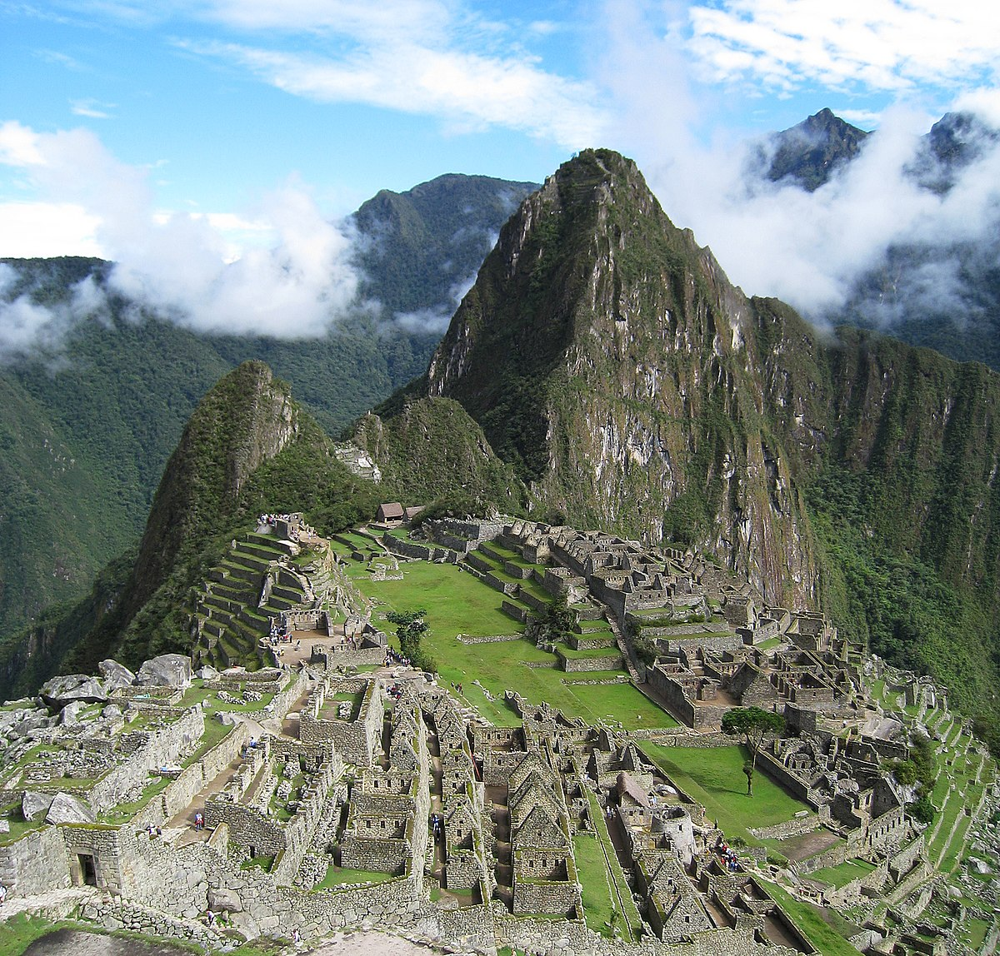

PERU
PERU
Machu Picchu este un oraș-templu incaș din secolul al XV-lea d.Hr., situat pe teritoriul regiunii actuale Cusco din Peru. Ruinele au fost redescoperite în 1911 de către arheologul Hiram Bingham, fiind unele dintre cele mai frumoase și enigmatice locuri străvechi din lume. În timp ce incașii foloseau sigur vârful muntelui (2761,5 m înălțime), ridicând sute de structuri de piatră începând cu anii 1400, legendele și miturile indicau faptul că Machu Picchu (însemnând "vechiul pisc" în limba Quechua) era adorat ca un loc sacru din cele mai vechi timpuri.Cele aproximativ 200 de structuri care alcătuiesc acest remarcabil centru religios, ceremonial, astronomic și agricol sunt așezate pe o creastă abruptă, străbătută de terase de piatră. Până în prezent, multe dintre misterele lui Machu Picchu rămân nerezolvate, inclusiv rolul exact pe care l-ar fi jucat în înțelegerea sofisticată de către incași a astronomiei și domesticirea speciilor de plante sălbatice.